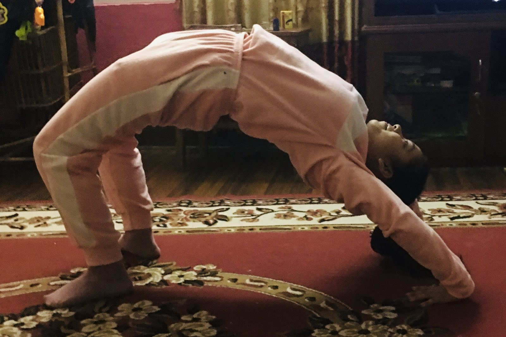

"Let food be thy medicine and medicine be thy food."
FOOD AND DIET

Maintaining a healthy diet is essential for physical health. The food you eat provides your body with the nutrients and energy it needs to function properly. A healthy diet can also help you maintain a healthy weight, reduce your risk of chronic diseases, and improve your overall well-being. When it comes to food and diet, there are a few key things to keep in mind. First and foremost, it's important to eat a variety of foods from all the different food groups. This means eating plenty of fruits and vegetables, whole grains, lean proteins, and healthy fats. By eating a variety of foods, you can ensure that your body is getting all the nutrients it needs to function properly.
Another important aspect of a healthy diet is portion control. Eating too much of anything can lead to weight gain, which can increase your risk of chronic diseases such as diabetes, heart disease, and certain types of cancer. By practicing portion control, you can enjoy all the foods you love without overeating.
In addition to eating a healthy diet, it's also important to stay hydrated. Drinking plenty of water can help keep your body functioning properly, improve digestion, and even boost your metabolism.
When it comes to physical health, it's important to remember that what you put into your body matters. By eating a healthy diet that is rich in nutrients and low in unhealthy fats and sugars, you can help reduce your risk of chronic diseases and improve your overall well-being. So, make sure to prioritize your diet and give your body the fuel it needs to stay healthy and strong.
Diet Plan
If you're looking to get in shape and improve your physical health, hitting the gym is a great place to start. However, it's important to remember that exercise alone isn't enough to achieve your fitness goals. A healthy diet is just as important, if not more so, than your workout routine.
Follow the diet plan as shown:
Gym Diet Day 1
| Breakfast | Oats Banana Pancakes with Protein Shake |
| Lunch | Multigrain roti along with palak chicken and Avocado bell pepper salad |
| Pre-Workout snack | Bananas |
| Dinner (Post-Workout) | Brown rice, peas paneer curry, sprouts vegetable salad |
Gym Diet Day 2
| Breakfast | Oatmeal with Greek Yogurt & Seasonal fruits Mango Juice |
| Lunch | Multigrain roti, fish curry, vegetable salad |
| Pre-Workout snack | Toast with Jam |
| Dinner (Post-Workout) | Broken wheat khichidi along with carrot raita, egg white, and vegetable salad |
Gym Diet Day 3
| Breakfast | Poached Eggs Whole Grain Toast Protein Shake |
| Lunch | Quinoa upma, chicken and broccoli salad |
| Pre-Workout snack | Mixed Nuts & Dried Fruits |
| Dinner (Post-Workout) | Lean Beef and vegetable curry, brown rice, cucumber raita Baby Potatoes Chocolate Milk |
Gym Diet Day 4
| Breakfast | Oatmeal with Honey Apple Juice |
| Lunch | Grilled Chicken Salad Whole Grain Bread |
| Pre-Workout snack | Toast with Peanut Butter |
| Dinner (Post-Workout) | Methi Chicken Brown Rice Broccoli Protein Shake |
Gym Diet Day 5
| Breakfast | Scrambled Egg Whole Grain Toast Smoothie |
| Lunch | Grilled chicken vegetable roti rolls Green Salad |
| Pre-Workout snack | Apple with peanut butter |
| Dinner (Post-Workout) | Keema bhurji and multigrain rotiLean Beef Mince Sweet Potato Protein Shake |
FITNESS
"Physical fitness is not only one of the most important keys to a healthy body, it is the basis of dynamic and creative intellectual activity."

Physical fitness and regular exercise are crucial for maintaining good health and well-being. Engaging in activities like strength training and cardio workouts can help build muscle, improve cardiovascular health, and reduce stress and anxiety. It's important to find an exercise routine that you enjoy and can stick to, while also being mindful of your body's needs and prioritizing self-care. Remember, any form of movement is beneficial, and it's always a good idea to consult with a healthcare professional before starting a new fitness routine. By making fitness a consistent part of your life, you can enjoy the many benefits that come with an active and healthy lifestyle.
Workout
- Warm-up: Spend 5-10 minutes warming up your body with some light cardio, such as jogging in place or jumping jacks.
- Push-ups: Do 3 sets of 10-12 push-ups (modified or regular). If regular push-ups are too challenging, start with modified push-ups by resting your knees on the ground. Start in a plank position with your hands shoulder-width apart. Lower your body down by bending your elbows, keeping your body straight. Push back up to the starting position.
- Bodyweight squats: Do 3 sets of 10-12 bodyweight squats. Stand with your feet shoulder-width apart, bend your knees, and lower your hips down as if sitting in a chair. Keep your chest up and your weight on your heels.
- Lungs: Do 3 sets of 10-12 lunges on each leg. Step forward with one foot, keeping your knee at a 90-degree angle. Lower your back knee down toward the ground, then push back up to the starting position.
- Plank: Hold a plank for 30-60 seconds. Start in a push-up position with your forearms on the ground. Keep your body straight and your core engaged.
- Jumping Jack: Do 3 sets of 30-60 seconds of jumping jacks. This will get your heart rate up and provide a cardiovascular challenge.
- Cool-down: Spend 5-10 minutes cooling down with some light stretching, such as hamstring stretches or shoulder rolls.